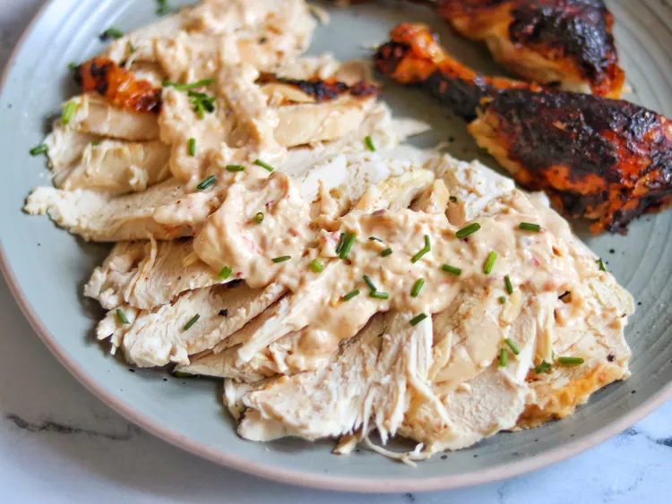

Home
Million Dollar Chicken

Description
This is a tasty chicken dish served in parts of Europe and America
Ingredients
- 1 (4.5 pound) whole chicken
- salt and ground black pepper to taste
- 1 lemon, halved
- 1 bunch fresh thyme
- 3 cloves garlic, peeled (Optional)
- 1 bay leaf
- 3 tablespoons olive oil, or as needed
- 3 thick slices day-old sourdough French bread
- 1 cup creme fraiche
- 1 tablespoon peeled and grated shallot
- 1 teaspoon Aleppo pepper
- 2 tablespoons lemon juice, or to taste
- 1 teaspoon lemon zest
- 3 chive blossoms for garnish, chopped (Optional)
Steps
- Preheat the oven to 450 degrees F (230 degrees C).
-
Season chicken cavity generously with salt and black pepper. Squeeze
lemon halves into cavity, then drop squeezed halves inside. Stuff cavity
with thyme, garlic, and bay leaf. Set aside.
-
Drizzle 1 tablespoon oil into a heavy roasting pan. Place bread slices
into the pan and press lightly into oil to coat the bottoms of bread.
Drizzle 1 more tablespoon oil over bread and place chicken on top. Tie
legs together with kitchen twine, then brush chicken with remaining 1
tablespoon oil. Season the entire outside of chicken with salt.
- Bake in the preheated oven for 1 hour.
-
Meanwhile, mix together crème fraîche, shallot, and Aleppo pepper in a
small bowl. Stir lemon juice and lemon zest into crème fraîche mixture.
Refrigerate sauce until needed.
-
Lift chicken off bread slices using tongs and flip bread slices over
(they will be very brown). Place chicken back onto bread slices.
Generously brush the outside of chicken with crème fraîche sauce,
putting enough on to drip down onto bread slices.
-
Bake until sauce is browned, about 10 minutes. Repeat, brushing more
crème fraîche sauce generously onto chicken. Bake for 10 more minutes.
Remove chicken from the oven and let stand for 10 minutes. An
instant-read meat thermometer inserted into the thickest part of a thigh
near the bone should read at least 165 degrees F (75 degrees C).
-
While chicken rests, pour remaining crème fraîche sauce into a small
skillet over medium heat; bring to a boil. Cook and stir until shallot
is cooked and sauce thickens slightly, 1 or 2 minutes. Turn off the heat
and set aside.
-
Transfer chicken and bread pieces to a cutting board. Cut bread pieces
in half crosswise and arrange them on a serving platter. Cut chicken
into 8 serving pieces (drumsticks, thighs, wings, and breasts) and place
over bread on the platter. Drizzle thickened crème fraîche sauce over
chicken and garnish with chopped chive blossoms.